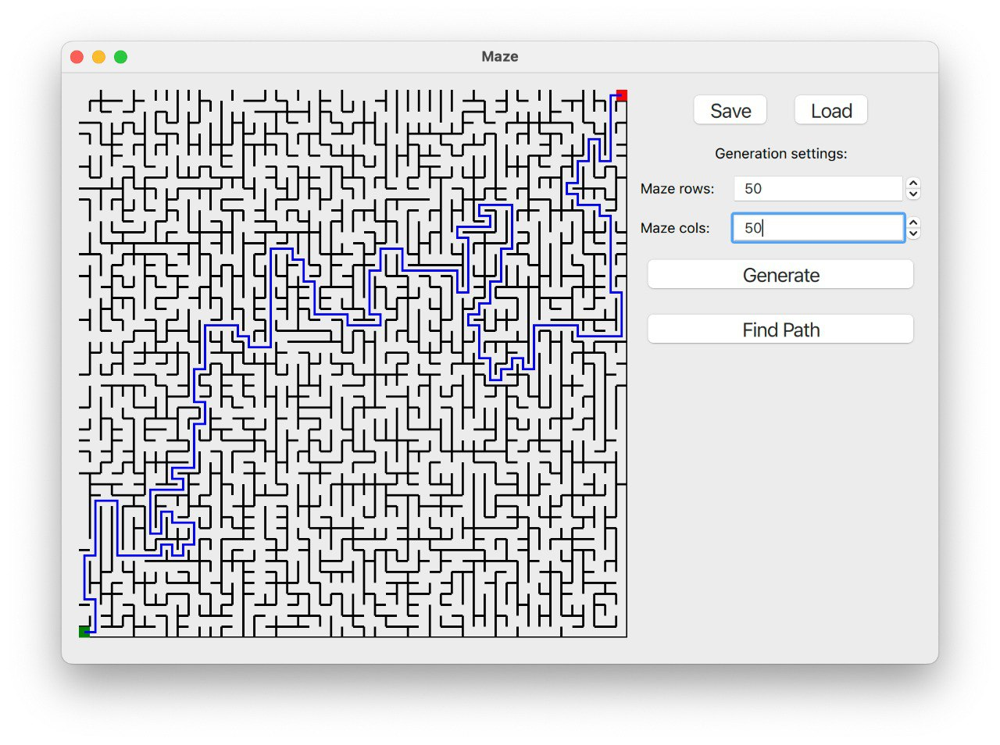

- Автоматическая генерация идеального лабиринта
- Максимальный размер 50х50
- Запись и чтение из файла
- Возможность нахождения кратчайшего пути
Разработана на языке C++ стандарта C++17
Сборка программы настроена с помощью Makefile с набором целей: all, install, uninstall, clean, dvi, dist, tests и др.
Графический пользовательский интерфейс на базе GUI-библиотеки Qt
Максимальный размер лабиринта — 50х50.
Генерация лабиринт согласно алгоритму Эллера.
Пользователем указывается только размерность лабиринта: количество строк и столбцов.
Возможность нахождения кратчайшего пути.
Возможность записи и чтения из файла.

Установка приложения
Скачайте и установите нашу уникальную программу для генерации лабиринтов.